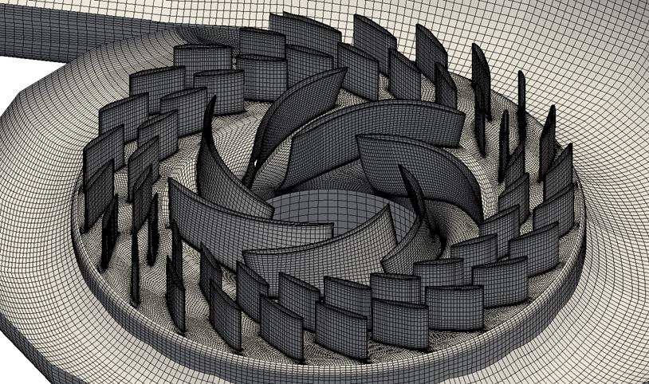

Ortsdiskretisierung mit der Finite-Differenz-Methode
Von den Grundgleichungen zum linearen Gleichungssystem
Ziel
Aufstellen eines linearen Gleichungssystems, dass mit numerischen Algorithmen gelöst werden kann.
Zunächst
Stationäres Problem \(\rightarrow \pp{}{t} = 0\)
Vorgehensweise in der numerischen Strömungsmechanik
Technisches Problem
Modellierung
Mathematische Beschreibung
Diskretisierung
- Rechengitter
- Diskretisierung mit Finite-Differenzen
- Diskretisierung für 1. und 2. Ableitung
- Randbedingungen
- Form des linearen Gleichungssystems
Numerische Lösung
Visualisierung
Auswertung
Expertise, Experimente
Validierung der Ergebnisse
Diskretisierung
Allgemeine Hinweise
- Die mathematischen Gleichungen können in der Regel nicht analytisch gelöst werden
- Daher Anwendung von numerischer Strömungsmechanik
- Zur Anwendung numerischer Methoden ist eine diskrete Darstellung der Lösung erforderlich
- Die Lösung kann nicht an jeder Stelle des Rechengebiets berechnet werden
- Durch die diskrete Darstellung erhält man die Lösung in den diskreten Punkten
- Die diskreten Punkte sind durch das verwendete Rechengitter definiert, das für eine Strömungssimulation erstellt werden muss


Diskretisierung
Übliche Methoden und Anschauungsbeispiel

Übliche Diskretisierungsmethoden
- Finite-Differenzen-Methode
- Anschaulich
- In diesem Kapitel der Vorlesung behandelt
- Finite-Volumen-Methode
- Häufig für CFD-Anwendungen, z.B. OpenFOAM, ANSYS Fluent, …
- Finite-Element-Methode
- Unüblich für CFD-Anwendungen
- Nicht im Rahmen der Vorlesung behandelt
- Die Berechnung erfolgt basierend auf dem verwendeten Rechennetz
- Die Unbekannten werden entweder auf dem Schnittpunkt der Gitterlinien oder in der Zellmitte durchgeführt
Finite-Differenzen-Methode
Vorgehensweise
1. Erstellen des Rechengitters
- Orthogonales Netz
- Nicht äquidistant
2. Appproximation der Differentialquotienten durch Differenzenquotienten
- Genauigkeit der Approximation
\[ \pp{\phi}{x} = \dd{\phi}{x} + \text{Abbruchfehler} \approx \dd{\phi}{x} \]
3. Aufstellen des Linearen Gleichungssystems
- Berücksichtigung von Randbedingungen
\[ {\tiny \begin{bmatrix} \blacksquare & \blacksquare & 0 & \dots & \dots & \dots & 0\\ \blacksquare & \ddots & \ddots & 0 & & & \vdots\\ 0 & \ddots & \ddots & \ddots & 0 & & \vdots\\ \vdots & 0 & \blacksquare & \blacksquare & \blacksquare& 0 & \vdots\\ \vdots & & 0 & \ddots & \ddots& \ddots & 0\\ \vdots & & & 0 & \ddots& \ddots & \blacksquare\\ 0 & \dots & \dots & \dots & 0 & \blacksquare & \blacksquare\\ \end{bmatrix} \begin{bmatrix} \phi_1 \\ \vdots \\ \phi_m \\ \vdots \\ \phi_N \\ \end{bmatrix} = \begin{bmatrix} 0 \\ \vdots \\ 0 \\ \vdots \\ 0 \\ \end{bmatrix} \mathrm{mit} \; \blacksquare \; \mathrm{für\ Einträge} \neq 0 } \]
4. Lösung
\[ \vec{\phi}^{(n+1)} = f(\vec{\phi}^{(n)}) \]
Finite-Differenzen-Methode
Erstellen des Rechengitters (1/4)
Beispiel: Betrachtung eines ein- und zweidimensionalen Berechnungsgebiets mit \(N\) und \(N \times M\) Knoten
Note
Im Allgemeinen muss das Gitter strukturiert und rechtwinklig (kartesisch) sein.
Finite-Differenzen-Methode
Appproximation der Differentialquotienten durch Differenzenquotienten (2/4)
- Je nachdem welche Differentialgleichung gelöst wird, werden meist für eine Unbekannte \(\phi\) die Ableitungen \(\pp{\phi}{x}\), \(\pp{^2 \phi}{x^2}\) und \(\pp{\phi}{t}\) benötigt. Diese kommen z.B. in den folgenden Gleichungen vor:
- \(\pp{\phi}{t} - \beta \pp{^2\phi}{x^2} = 0\)
- \(\pp{\phi}{t} + \alpha \pp{\phi}{x} = 0\)
- \(\pp{\phi}{t} + \phi \pp{\phi}{x} = 0\)
- Orts- und Zeitableitung werden prinzipiell durch das gleiche Schema abgeleitet
Finite-Differenzen-Methode
Appproximation der Differentialquotienten durch Differenzenquotienten (graphisch) (2/4)

Das Differential für \(\pp{\phi}{x}\) an der Stelle \(x=x_i\), also \(\ppb{\phi(x_i)}{x} = \at{\pp{\phi}{x}}{x=x_i} = \at{\pp{\phi}{x}}{i} \approx \at{\dd{\phi}{x}}{i}\), wird durch unterschiedliche Differenzen approximiert:
\(\frac{\phi(x_i + \Delta x) - \phi(x_i)}{(x_i + \Delta x) - (x_i)} = \fd{\phi}{i+1}{i}{\Delta x}\) (Vorwärtsdifferenz)
\(\frac{\phi(x_i) - \phi(x_i - \Delta x)}{(x_i) - (x_i - \Delta x)} = \fd{\phi}{i}{i-1}{\Delta x}\) (Rückwärtsdifferenz)
\(\frac{\phi(x_i + \Delta x) - \phi(x_i - \Delta x)}{(x_i + \Delta x) - (x_i - \Delta x)} = \fd{\phi}{i+1}{i-1}{2\Delta x}\) (Zentrale Differenz)
Die Differenz wird jeweils über unterschiedliche Intervalle gebildet. Bei der Vorwärts- und Rückwärtsdifferenz hat das Interval eine Länge von \(\Delta x\); bei der zentralen Differenz entspricht das Interval der doppelten Länge \(2 \Delta x\).
Finite-Differenzen-Methode
Appproximation der Differentialquotienten durch Differenzenquotienten (graphisch) (2/4)
Das Differential für \(\ppnd{\phi}{x}\) an der Stelle \(x=x_i\), also \(\ppndb{\phi(x_i)}{x} = \at{\ppnd{\phi}{x}}{x=x_i} = \at{\ppnd{\phi}{x}}{i} = \at{\pp{}{x} \left( \pp{\phi}{x} \right)}{i} \approx \at{\dd{}{x} \left( \dd{\phi}{x} \right)}{i}\), lässt sich in zwei Differenzen “unterteilen”: die Differenz aus Vorwärts- und Rückwärtsdifferenz von \(\phi\). Es ergibt sich damit die Approximation von \(\at{\ppnd{\phi}{x}}{i}\) zu:
\[ \frac{1}{\Delta x}\left( \fd{\phi}{i+1}{i}{\Delta x} - \fd{\phi}{i}{i-1}{\Delta x} \right) = \frac{\phi_{i+1}-2\phi_i+\phi_{i-1}}{\bdx{2}} \]
Finite-Differenzen-Methode
Appproximation der Differentialquotienten durch Differenzenquotienten (2/4)
Die systematische Herleitung von Approximationen erfolgt über die Taylorreihe. Allgemein wird eine eindimensionale Funktion \(f(x)\) über den Entwicklungspunkt \(a\) durch \[ T_m f(x;a) = \sum_{n=0}^{(m-1)} \frac{(x-a)^n}{n!} \at{\pp{^n f(x)}{x^n}}{x=a} \] angenährt. Mit steigendem \(m\) wird die Näherung genauer; entsprechend konvergiert sie für \(m \rightarrow \infty\) für viele Funktionen gegen diese.
Taylorreihe bis zur Ableitung 3. Ordnung:
\[ \begin{align} T_4 f(x;a) &= \sum_{n=0}^{3} \frac{(x-a)^n}{n!} \at{\pp{^n f}{x^n}}{a} \\ &= \frac{(x-a)^0}{0!} \at{\pp{^0 f}{x^0}}{a} + \frac{(x-a)^1}{1!} \at{\pp{^1 f}{x^1}}{a} + \frac{(x-a)^2}{2!} \at{\pp{^2 f}{x^2}}{a} + \frac{(x-a)^3}{3!} \at{\pp{^3 f}{x^3}}{a} \\ &= \at{f}{a} + (x-a) \at{\pp{f}{x}}{a} + \frac{(x-a)^2}{2} \at{\pp{^2 f}{x^2}}{a} + \frac{(x-a)^3}{6} \at{\pp{^3 f}{x^3}}{a} \end{align} \]
Finite-Differenzen-Methode
Appproximation der Differentialquotienten durch Differenzenquotienten (2/4)
Vergleich unterschiedlicher Annäherungen mit dem Entwicklungspunkt \(x_i\):
\[ \begin{align} T_2 f(x;x_i) &= \at{f}{x_i} + (x-x_i) \at{\pp{f}{x}}{x_i} \\ T_3 f(x;x_i) &= \at{f}{x_i} + (x-x_i) \at{\pp{f}{x}}{x_i} + \frac{(x-x_i)^2}{2} \at{\pp{^2 f}{x^2}}{x_i} \\ T_4 f(x;x_i) &= \at{f}{x_i} + (x-x_i) \at{\pp{f}{x}}{x_i} + \frac{(x-x_i)^2}{2} \at{\pp{^2 f}{x^2}}{x_i} + \frac{(x-x_i)^3}{6} \at{\pp{^3 f}{x^3}}{x_i} \\ \end{align} \]
Finite-Differenzen-Methode
Appproximation der Differentialquotienten durch Differenzenquotienten (2/4)
Auswertung des Taylorpolynoms \(T_4\) um den Entwicklungspunkt \(x_i\) an der Stelle \(x_i + \Delta x\) liefert:
\[ \begin{align} T_4 f(\underbrace{x_i + \Delta x}_{x};x_i) &= \at{f}{x_i} + (\underbrace{x_i + \Delta x}_{x} - x_i) \at{\pp{f}{x}}{x_i} + \frac{(\overbrace{x_i + \Delta x}^{x} - x_i)^2}{2} \at{\pp{^2 f}{x^2}}{x_i} + \frac{(\overbrace{x_i + \Delta x}^{x} - x_i)^3}{6} \at{\pp{^3 f}{x^3}}{x_i} \\ &= \at{f}{x_i} + (\Delta x) \at{\pp{f}{x}}{x_i} + \frac{(\Delta x)^2}{2} \at{\pp{^2 f}{x^2}}{x_i} + \frac{(\Delta x)^3}{6} \at{\pp{^3 f}{x^3}}{x_i} \end{align} \]
Die vollständige Taylorreihe an der Stelle \(x_i + \Delta x\) konvergiert also gegen den Funktionswert:
\[ \begin{align} f(x_i + \Delta x) = \at{f}{x_i} + (\Delta x) \at{\pp{f}{x}}{x_i} + \frac{(\Delta x)^2}{2} \at{\pp{^2 f}{x^2}}{x_i} + \frac{(\Delta x)^3}{6} \at{\pp{^3 f}{x^3}}{x_i} + ... \end{align} \]
Entsprechendes gilt für die Taylorreihe an der Stelle \(x_i - \Delta x\):
\[ \begin{align} f(x_i - \Delta x) = \at{f}{x_i} - (\Delta x) \at{\pp{f}{x}}{x_i} + \frac{(\Delta x)^2}{2} \at{\pp{^2 f}{x^2}}{x_i} - \frac{(\Delta x)^3}{6} \at{\pp{^3 f}{x^3}}{x_i} + ... \end{align} \]
Finite-Differenzen-Methode
Appproximation der Differentialquotienten durch Differenzenquotienten (2/4)
Zur Herleitung der Vorwärtsdifferenz wird die Taylorreihe
\[ \begin{align} \underbrace{f(x_i + \Delta x)}_{=\at{f}{x_{i+1}}} = \at{f}{x_i} + (\Delta x) \at{\pp{f}{x}}{x_i} + \frac{(\Delta x)^2}{2} \at{\pp{^2 f}{x^2}}{x_i} + \frac{(\Delta x)^3}{6} \at{\pp{^3 f}{x^3}}{x_i} + \underbrace{...}_{=\Odx{4})} \end{align} \]
mit dem Abbruchfehler (Fehlerterm) \(\Odx{4})\) nach der ersten Ableitung \(\at{\pp{f}{x}}{x_i}\) umgestellt:
\[ \begin{align} \underbrace{\at{\pp{f}{x}}{x_i}}_{=\at{\pp{f}{x}}{i}} &= \underbrace{ \frac{\at{f}{x_{i+1}} - \at{f}{x_i}}{\Delta x} }_{ \frac{f_{i+1}-f_i}{\Delta x} } - \underbrace{ \frac{(\Delta x)^2}{2 \Delta x} \at{\pp{^2 f}{x^2}}{x_i} - \frac{(\Delta x)^3}{6 \Delta x} \at{\pp{^3 f}{x^3}}{x_i} - \frac{\Odx{4})}{\Delta x} }_{\Odx{1}} \\ \at{\pp{f}{x}}{i} &= \frac{f_{i+1}-f_i}{\Delta x} + \underbrace{ \Odx{1} }_{ \text{Führender Fehlerterm} } \approx \frac{f_{i+1}-f_i}{\Delta x} \end{align} \]
Note
- Der Führende Fehlerterm gibt die Fehlerordnung des Diskretisierungsschemas vor.
- Es ist der erste Term, der nicht für die Approximation verwendet wird.
- Die folgenden Fehlerterme mit einer höheren Ordnung haben in der Regel einen geringeren Einfluss.
Finite-Differenzen-Methode
Appproximation der Differentialquotienten durch Differenzenquotienten (2/4)
Zur Herleitung der Rückwärtsdifferenz wird die Taylorreihe
\[ \begin{align} \at{f}{i-1} = \at{f}{i} - \dx \at{\pp{f}{x}}{i} + \frac{\bdx{2}}{2} \at{\pp{^2 f}{x^2}}{i} - \frac{\bdx{3}}{6} \at{\pp{^3 f}{x^3}}{i} + \underbrace{...}_{=\Odx{4})} \end{align} \]
wieder nach der ersten Ableitung \(\at{\pp{f}{x}}{i}\) umgestellt:
\[ \begin{align} \at{\pp{f}{x}}{i} &= \fd{f}{i}{i-1}{\Delta x} + \Odx{1} \end{align} \]
Finite-Differenzen-Methode
Appproximation der Differentialquotienten durch Differenzenquotienten (2/4)
Zur Herleitung weiterer Diskretisierungsschemata werden die beiden Gleichungen \[ \begin{align} \at{f}{i+1} = \at{f}{i} + \dx \at{\pp{f}{x}}{i} + \frac{\bdx{2}}{2} \at{\pp{^2 f}{x^2}}{i} + \frac{\bdx{3}}{6} \at{\pp{^3 f}{x^3}}{i} + \Odx{4} \end{align} \] und \[ \begin{align} \at{f}{i-1} = \at{f}{i} - \dx \at{\pp{f}{x}}{i} + \frac{\bdx{2}}{2} \at{\pp{^2 f}{x^2}}{i} - \frac{\bdx{3}}{6} \at{\pp{^3 f}{x^3}}{i} + \Odx{4} \end{align} \] zu \[ \begin{align} a \at{f}{i+1} + b \at{f}{i-1} = (a+b) \at{f}{i} + (a-b) \dx \at{\pp{f}{x}}{i} + (a+b) \frac{\bdx{2}}{2} \at{\pp{^2 f}{x^2}}{i} + (a-b) \frac{\bdx{3}}{6} \at{\pp{^3 f}{x^3}}{i} + (a+b) \Odx{4} \end{align} \] kombiniert.
Eine geschickte Wahl von \(a\) und \(b\) liefert dann Diskretisierungsschemata für gewünschte Ableitungen und Fehlerordnungen.
Finite-Differenzen-Methode
Appproximation der Differentialquotienten durch Differenzenquotienten (2/4)
Zur Herleitung der Zentralen Differenz müssen folgende Bedingungen gelten: \[ \begin{align} a \at{f}{i+1} + b \at{f}{i-1} = (a+b) \at{f}{i} + \underbrace{(a-b)}_{=1} \dx \at{\pp{f}{x}}{i} + \underbrace{(a+b)}_{=0} \frac{\bdx{2}}{2} \at{\pp{^2 f}{x^2}}{i} + (a-b) \frac{\bdx{3}}{6} \at{\pp{^3 f}{x^3}}{i} + (a+b) \Odx{4} \end{align} \]
Es ergibt sich \(a=\frac{1}{2}\) und \(b=-\frac{1}{2}\). Damit ergibt sich folgendes Diskretisierungsschema:
\[ \at{\pp{f}{x}}{i} = \fd{f}{i+1}{i-1}{2\dx} + \Odx{2} \]
Note
Im Vergleich zu den bisherigen Schemata hat die Zentrale Differenz einen führenden Fehlerterm mit der Ordnung 2 für die Appoximation der ersten Ableitung.
Finite-Differenzen-Methode
Appproximation der Differentialquotienten durch Differenzenquotienten (2/4)
Zur Herleitung einer Appoximation für die zweite Ableitung müssen folgende Bedingungen gelten: \[ \begin{align} a \at{f}{i+1} + b \at{f}{i-1} = (a+b) \at{f}{i} + \underbrace{(a-b)}_{=0} \dx \at{\pp{f}{x}}{i} + \underbrace{(a+b)}_{=1} \frac{\bdx{2}}{2} \at{\pp{^2 f}{x^2}}{i} + (a-b) \frac{\bdx{3}}{6} \at{\pp{^3 f}{x^3}}{i} + (a+b) \Odx{4} \end{align} \]
Es ergibt sich \(a=\frac{1}{2}\) und \(b=\frac{1}{2}\). Damit ergibt sich folgendes Diskretisierungsschema:
\[ \at{\ppnd{f}{x}}{i} = \ffd{f}{i+1}{i}{i-1}{\dx^2} + \Odx{2} \]
Finite-Differenzen-Methode
Appproximation der Differentialquotienten durch Differenzenquotienten (2/4)
Die Approximationen für eindimensionale Probleme können einfach auf zwei- oder dreidimensionale Probleme angewendet werden.
Beispiele in zwei Dimensionen
Vorwärtsdifferenz
\[ \begin{align} \at{\pp{f}{x}}{i,j} \approx \fd{f}{i+1,j}{i,j}{\dx} \; \text{und} \; \at{\pp{f}{y}}{i,j} \approx \fd{f}{i,j+1}{i,j}{\dy} \end{align} \]
Rückwärtsdifferenz
\[ \begin{align} \at{\pp{f}{x}}{i,j} \approx \fd{f}{i,j}{i-1,j}{\dx} \; \text{und} \; \at{\pp{f}{y}}{i,j} \approx \fd{f}{i,j}{i,j-1}{\dy} \end{align} \]
Zentrale Differenz
\[ \begin{align} \at{\pp{f}{x}}{i,j} \approx \fd{f}{i+1,j}{i-1,j}{2 \dx} \; \text{und} \; \at{\pp{f}{y}}{i,j} \approx \fd{f}{i,j+1}{i,j-1}{2 \dy} \end{align} \]
\[ \begin{align} \at{\ppnd{f}{x}}{i,j} &\approx \ffd{f}{i+1,j}{i,j}{i-1,j}{\dx^2}\\ \at{\ppnd{f}{y}}{i,j} &\approx \ffd{f}{i,j+1}{i,j}{i,j-1}{\dy^2} \end{align} \]
Finite-Differenzen-Methode
Appproximation der Differentialquotienten durch Differenzenquotienten (2/4)
Anmerkungen zum Diskretisierungsfehler
Die Fehlerordnung bezieht sich auf die Konvergenzrate bei Gitterverfeinerung.
Note
- Ein Verfahren mit hoher Fehlerordnung bedeutet nicht unbedingt auch einen kleineren Fehler.
- Für die 1. Ordung halbiert sich theoretisch der Fehler bei Verdopplung der Knotenanzahl; entsprechend viertelt sich der Fehler bei der 2. Ordnung
- Es kann gezeigt werden, dass die Fehlerordnung auf nichtäquidistanten gleich der auf äquidistanten Gittern ist.
Finite-Differenzen-Methode
Appproximation der Differentialquotienten durch Differenzenquotienten (2/4)
Anmerkungen zum Diskretisierungsfehler
- Die Idee hinter der Verwendung von nichtäquidistanten Gittern ist, dass der Diskretisierungsfehler nicht nur von der Gitterweite \(\dx\), sondern auch von den Ableitungen der Variablen (z.B. \(\frac{\dx}{2!} \at{\ppnd{f}{x}}{i}\)) abhängt.
- Der Diskretisierungsfehler hängt von der gewählten Approximation sowie der Gitterweite ab.
- Approximationen höherer Ordnung lassen sich ebenfalls herleiten. Diese resultieren in einem größeren Differenzenstern und somit erhöhtem Berechnungsaufwand, z. B. eine Rückwärtsdifferenz für die erste Ableitung aus den Knoten \(i\), \(i-1\) und \(i-2\).
\(\leftarrow\) Verfahren 1. Ordnung \(\leftrightarrow\) Verfahren 2. Ordnung \(\rightarrow\)
- Im Idealfall sollten alle Terme (inklusive Randbedingungen) mit Approximationen gleicher Ordnung diskretisiert werden.
Finite-Differenzen-Methode
Appproximation der Differentialquotienten durch Differenzenquotienten (2/4)
Aufwind (Upwind) Diskretisierung vs. Zentrale Differenz
- Bei Transportgleichungen mit dominanter Konvektion liegt eine Richtungsabhängigkeit vor. Diese wird mit einer Zentralen Differenz nicht berücksichtigt.
- Physikalisch gesehen hat dann der stromauf gelegene Knoten mehr Einfluss als der stromab gelegene.
- Das einfachste Diskretisierungsschema, das die Richtungsabhängigkeit berücksichtigt, ist ein Aufwind-Verfahren, das je nach Strömungsrichtung eine Vorwärts- oder Rückwärtsdifferenz verwendet.
Beispiel:
Je nach Vorzeichen der Geschwindigeit \(\alpha\) in der Gleichung \(\pp{\phi}{t} + \alpha \pp{\phi}{x} = 0\) wird das Diskretisierungsschema für den Konvektionsterm angepasst:
\[ \pp{\phi}{x} = \begin{cases} \fd{\phi}{i}{i-1}{\dx} \, \text{wenn} \, \alpha>0 \\ \fd{\phi}{i+1}{i}{\dx} \, \text{sonst} \end{cases} \]
Finite-Differenzen-Methode
Appproximation der Differentialquotienten durch Differenzenquotienten (2/4)
Aufwind (Upwind) Diskretisierung vs. Zentrale Differenz
Für Strömungsvorgänge definiert die \(Re\)-Zahl das Verhältnis aus Trägheits- und Reibkräften, also genau das Verhältnis aus Konvektion und Diffusion; entsprechend muss bei hohen \(Re\)-Zahlen eine Aufwind-Diskretisierung angewendet werden.
In der Energiegleichung definiert die \(Pe\)-Zahl (Peclet-Zahl) das Verhältnis aus Konvektion und Diffusion
Bei dominierender Konvektion kann es bei Verwendung einer zentralen Differenz für die Diskretisierung des Konvektionsterms zu unphysikalischen Oszillationen in der Lösung kommen.
Der Grund für die unphysikalischen Oszillationen ist, dass die Matrix im linearen Gleichungssystem bei Verwendung einer Diskretisierung mit zentralen Differenzen nicht mehr diagonaldominant ist.
- Das bedeutet, dass die Koeffizienten der Hauptdiagonale nicht mehr größer sind als die Summe der weiteren Einträge in dieser Zeile.
Es kann gezeigt werden, dass eine Zentrale Differenz nur stabil ist, sofern folgende Bedingung für die Geschwindigkeit \(v\), die Gitterweite \(\dx\) und der Diffusionskonstanten \(\alpha\) bzw. \(\nu\) in einem jeweiligen Element gilt:
\[ Pe_{\text{Element}} = \frac{v \dx}{\alpha} < 2 \; \text{bzw.} \; Re_{\text{Element}} = \frac{v \dx}{\nu} < 2 \]
Finite-Differenzen-Methode
Appproximation der Differentialquotienten durch Differenzenquotienten (2/4)
Verhalten des Diskretisierungsfehlers
Zur Untersuchung wird in die Gleichung \(\pp{\phi}{t}+\alpha \pp{\phi}{x} = 0\) statt dem Diskretisierungsschema die Ableitung und der führende Fehlerterm eingesetzt:
Die Rückwärtsdifferenz \[\at{\pp{\phi}{x}}{i} \approx \fd{\phi}{i}{i-1}{\dx} + \frac{\dx}{2} \at{\ppnd{\phi}{x}}{i} \] wird umgestellt zu \[\fd{\phi}{i}{i-1}{\dx} \approx \at{\pp{\phi}{x}}{i} - \frac{\dx}{2} \at{\ppnd{\phi}{x}}{i} \] und in die Differentialgleichung eingesetzt. Es ergibt sich die effektiv zu lösende Gleichung als: \[ \at{\pp{\phi}{t}}{t_i} + \alpha \left( \at{\pp{\phi}{x}}{i} - \frac{\dx}{2} \at{\ppnd{\phi}{x}}{i} \right) \approx 0 \]
Der Fehlerterm hat diffusiven Charakter.
Die Zentrale Differenz \[ \at{\pp{\phi}{x}}{i} \approx \fd{\phi}{i+1}{i-1}{2\dx} - \frac{\dx}{6} \at{\pp{^3\phi}{x^3}}{i} \] wird umgestellt zu \[ \fd{\phi}{i+1}{i-1}{2\dx} \approx \at{\pp{\phi}{x}}{i} + \frac{\dx}{6} \at{\pp{^3\phi}{x^3}}{i} \] und in die Differentialgleichung eingesetzt. Es ergibt sich die effektiv zu lösende Gleichung als: \[ \at{\pp{\phi}{t}}{t_i} + \alpha \left( \at{\pp{\phi}{x}}{i} + \frac{\dx}{6} \at{\pp{^3\phi}{x^3}}{i} \right) \approx 0 \]
Der Fehlerterm hat dispersiven Charakter.
Finite-Differenzen-Methode
Appproximation der Differentialquotienten durch Differenzenquotienten (2/4)
Verhalten des Diskretisierungsfehlers
Diffusiver Fehler
\[ \pp{\phi}{t} + \alpha \pp{\phi}{x} - \underbrace{\alpha \frac{\dx}{2} \ppnd{\phi}{x}}_{\text{Gerade Ableitung}} \approx 0 \]
- Gradienten werden geglättet
- Beschränkt
Dispersiver Fehler
\[ \pp{\phi}{t} + \alpha \pp{\phi}{x} + \underbrace{\alpha \frac{\dx}{6} \pp{^3\phi}{x^3}}_{\text{Ungerade Ableitung}} \approx 0 \]
- Numerische Oszillationen in der Lösung möglich
- Unbeschränkt
Note
Sofern die ursprüngliche Gleichung schon eine zweite Ableitung und damit Diffusion enthält, kann durch einen diffusiven Fehler diese erhöht werden. Das wird als zusätzliche numerische Diffusion bezeichnet.
Finite-Differenzen-Methode
Appproximation der Differentialquotienten durch Differenzenquotienten (2/4)
Es gibt eine Vielzahl möglicher Schemas für die Diskretisierung des Konvektionsterms, die für unterschiedliche Anwendungen entwickelt wurden.
Gängige Diskretisierungsschemas für praktische Anwendungen (z.B. Turbinensimulationen) sind:
- High Resolution:
- Mischung aus Verfahren 1. und 2. Ordnung
- Verfahren 2. Ordnung, wo möglich
- Verfahren 1. Ordnung in Bereichen hoher Gradienten
- Linear Upwind (Aufwind-Diskretisierung 2.Ordnung) \[ \at{\pp{\phi}{x}}{i} \approx \frac{\phi_{i+2}-4\phi_{i+1}+3\phi_i}{2\dx} \; \text{bzw.} \; \at{\pp{\phi}{x}}{i} \approx \frac{\phi_{i-2}-4\phi_{i-1}+3\phi_i}{2\dx} \]
- High Resolution:
Finite-Differenzen-Methode
Aufstellen des linearen Gleichungssystems (3/4)
Durch Einsetzen der Differenzenquotienten erhält man die diskretisierte Gleichung zur Berechnung der inneren Knoten.
Beispiel:
Die Gleichung \[ u \pp{\phi}{x} - \beta \ppnd{\phi}{x} = 0 \] mit der unbekannten Größe \(\phi\) lautet nach einer möglichen Diskretisierung für den Knoten \(i\): \[ u_i \fd{\phi}{i+1}{i-1}{2\dx} - \beta_i \ffd{\phi}{i+1}{i}{i-1}{\dx^2} = 0 \] Umgestellt lautet die Gleichung: \[ \left( \frac{u_i}{2\dx} - \frac{\beta}{\dx^2} \right) \phi_{i+1} + \left( \frac{2\beta}{\dx^2} \right) \phi_{i} + \left( - \frac{u_i}{2\dx} - \frac{\beta}{\dx^2} \right) \phi_{i-1} = 0 \] Diese Gleichung wird für jeden anderen inneren Knoten ebenfalls aufgestellt.
Finite-Differenzen-Methode
Aufstellen des linearen Gleichungssystems (3/4)
Es ergibt sich das lineare Gleichungssystem \(\mat{A} \vec{\phi} = \vec{b}\). Die Matrix hat für die gewählte Diskretisierung auf dem Gitter drei Bänder.

Für das Beispiel ergibt sich das lineare Gleichungssystem zu: \[ \underbrace{ \begin{bmatrix} \blacksquare & \blacksquare & 0 & \dots & \dots & \dots & 0\\ \blacksquare & \ddots & \ddots & 0 & & & \vdots\\ 0 & \ddots & \ddots & \ddots & 0 & & \vdots\\ \vdots & 0 & \left( \frac{u_i}{2\dx} - \frac{\beta}{\dx^2} \right) & \left( \frac{2\beta}{\dx^2} \right) & \left( -\frac{u_i}{2\dx} - \frac{\beta}{\dx^2} \right) & 0 & \vdots \\ \vdots & & 0 & \ddots & \ddots& \ddots & 0\\ \vdots & & & 0 & \ddots& \ddots & \blacksquare\\ 0 & \dots & \dots & \dots & 0 & \blacksquare & \blacksquare\\ \end{bmatrix} }_{\text{Systemmatrix}\;\mat{A}} \underbrace{ \begin{bmatrix} \phi_1 \\ \vdots \\ \phi_{i-1} \\ \phi_{i} \\ \phi_{i+1} \\ \vdots \\ \phi_N \\ \end{bmatrix} }_{\text{Lösungsvektor} \; \vec{\phi}} = \underbrace{ \begin{bmatrix} 0 \\ \vdots \\ 0 \\ \vdots \\ 0 \\ \end{bmatrix} }_{\text{Rechte Seite} \; \vec{b}} \mathrm{mit} \; \blacksquare \; \mathrm{für\ Einträge} \neq 0 \]
Finite-Differenzen-Methode
Aufstellen des linearen Gleichungssystems (3/4)
Systemmatrix
- Die Form der Systemmatrix hängt vom verwendeten Differenzenstern und Gitter ab.
- Bei strukturieren Gittern ergibt sich meist eine Bandmatrix.
- Je nachdem in welcher Reihenfolge ein strukturiertes mehrdimensionales Gitter nummeriert wird, liegen die Bänder näher oder weiter entfernt von der Hauptdiagonalen.
- Die Struktur der Matrix ist meist symmetrisch.
- Die Werte müssen jedoch nicht symmetrisch sein. Dies hängt von der diskretisierten Gleichung ab.
- Je größer der verwendete Diskretisierungsstern ist, desto mehr Einträge ungleich Null sind in einer Zeile vorhanden.
- Fast alle Diskretisierungsverfahren für partielle Differentialgleichungen liefern schwachbesetzte Matrizen.
- Die Dimension der Matrix ist quadratisch und entspricht der Größe des Gitters. Beim Finite-Differenzen-Verfahren entspricht die Dimension der Anzahl der Knotenpunkte; beim Finite-Volumen-Verfahren entspricht sie der Anzahl der Zellen.
Lösungsvektor
- Der Lösungsvektor enthält die gesuchte Größe für jeden Gitterpunkt.
Rechte Seite
- Der Vektor enthält Terme, die nicht die gesuchte Größe enthalten, z.B. Quellterme. Zusätzlich stehen in ihm die Randbedingungen.
Finite-Differenzen-Methode
Randbedingung (3/4)
- Während die inneren Knoten alle einheitlich behandelt werden, müssen die äußeren Knoten (Randknoten) separat über Randbedingungen behandelt werden.
- Es gibt verschiedene Typen von Randbedingungen:
- Dirichlet-Randbedingung
- Neumann-Randbedingung
- Periodische Randbedingung
- Randbedingungen sollten in Regionen gelegt werden, in denen sie keinen Einfluss auf die Lösung haben. Tendenziell gilt: je weiter entfernt die Randbedingung liegt, desto weniger wird das Ergebnis beeinflusst.
Beispiel: Position der Randbedingung für eine Stufenströmung (Backward-Facing-Step) von schlecht (rot) über besser (gelb) nach gut (grün)

Finite-Differenzen-Methode
Dirichlet-Randbedingung (3/4)
Eine Dirichlet-Randbedingung gibt direkt den Wert eines Randknotens vor, z.B. Unbekannte \(\phi=1\).
Die Vorgabe der Unbekannten für den ersten Knoten lautet z.B.
\[ \phi_{1} = 1 \]
Eine Dirichlet-Randbedingung “eliminiert” damit eine Zeile aus der Systemmatrix. An einem Dirichlet-Randknoten muss also keine Gleichungs mehr gelöst werden. Theoretisch kann diese dann um eine Dimension durch Einsetzen des bekannten Werts reduziert werden.
Beispiele:
- Geschwindigeit bzw. Massenstrom am Eintritt ist bekannt.
- Wandtemperatur oder Eintrittstemperatur ist bekannt.
- Geschwindigkeit an reibungsbehafteten Wänden ist bekannt (Haftbedingung).
- Druck am Austritt wird vorgegeben.
Finite-Differenzen-Methode
Neumann-Randbedingung (3/4)
Eine Neumann-Randbedingung gibt den Gradient der Unbekannten an einem Randknoten vor, z.B. \(\pp{\phi}{\vec{n}} = 0\). Typischerweise wird der Gradient in Normalenrichtung \(\vec{n}\) des Randes vorgegeben.
Beispiel: Vorgabe des Gradienten \(\pp{\phi}{x}=0\) am rechten Rand für die Gleichung \(u \pp{\phi}{x} - \beta \ppnd{\phi}{x} = 0\)
Die diskretisierte Gleichung für den Knoten \(N\) lautet: \[ u_N \fd{\phi}{N+1}{N-1}{2\dx} - \beta_i \ffd{\phi}{N+1}{N}{N-1}{\dx^2} = 0 \] Der Knoten an der Stelle \(N+1\) gehört nicht zum Rechengitter. Aus der Vorgabe des Gradienten, z.B. mit einer zentralen Differenz \[ \at{\pp{\phi}{x}}{N} = \fd{\phi}{N+1}{N-1}{2\dx} + \Odx{2} = 0 \] wird die Bedingung unter Vernachlässigung des Abbruchfehlers \(\phi_{N+1} = \phi_{N-1}\) abgeleitet. Es wird in der diskretisierten Gleichung für den Knoten \(N\) der Wert \(\phi_{N+1}\) durch \(\phi_{N-1}\) ersetzt.
Finite-Differenzen-Methode
Aufstellen des linearen Gleichungssystems (3/4)
Das Einsetzen der Dirichlet- und Neumann-Randbedingung jeweils am linken und rechten Rand verändert die Systemmatrix und die rechte Seite zu: \[ \begin{bmatrix} 1 & 0 & 0 & \dots & \dots & \dots & 0\\ \blacksquare & \ddots & \ddots & 0 & & & \vdots\\ 0 & \ddots & \ddots & \ddots & 0 & & \vdots\\ \vdots & 0 & \left( \frac{u_i}{2\dx} - \frac{\beta}{\dx^2} \right) & \left( \frac{2\beta}{\dx^2} \right) & \left( -\frac{u_i}{2\dx} - \frac{\beta}{\dx^2} \right) & 0 & \vdots \\ \vdots & & 0 & \ddots & \ddots& \ddots & 0\\ \vdots & & & 0 & \ddots& \ddots & \blacksquare\\ 0 & \dots & \dots & \dots & 0 & -\frac{2\beta}{\bdx{2}} & \frac{2\beta}{\bdx{2}}\\ \end{bmatrix} \begin{bmatrix} \phi_1 \\ \vdots \\ \phi_{i-1} \\ \phi_{i} \\ \phi_{i+1} \\ \vdots \\ \phi_N \\ \end{bmatrix} = \begin{bmatrix} 1 \\ \vdots \\ 0 \\ 0 \\ 0 \\ \vdots \\ 0 \\ \end{bmatrix} \mathrm{mit} \; \blacksquare \; \mathrm{für\ Einträge} \neq 0 \]
Beim Einsetzen der Randbedingungen verändern sich meist die Koeffizienten der Matrix in den Randknoten und die rechte Seite.
Finite-Differenzen-Methode
Typische Randbedingungen (3/4)
Bei der Berechnung von inkompressiblen Strömungsproblemen gibt es mehrere Möglichkeiten. Eine typische Randbedingungsvorgabe erfolgt durch:
Dirichlet-Randbedingung
- Geschwindigkeit am Eintritt
- Druck am Austritt
Neumann-Randbedingung
- Geschwindigkeit am Austritt
- Druck am Eintritt
Achtung: Bei kompressiblen Überschallströmungen müssen Geschwindigkeit und Druck am Eintritt vorgegeben werden, da sich Störungen nur stromab ausbreiten.
Finite-Differenzen-Methode
Lösung (4/4)
Die Lösung des linearen Gleichungssystems \[ \mat{A} \vec{\phi} = \vec{b} \] erfolgt fast immer bei numerischer Strömungssimulation indirekt. Es wird also nicht die Inverse \(\mat{A}^{-1}\) berechnet, da dies in der Regel zu aufwändig ist.
Für indirekte Gleichungslöser gilt:
- Die Lösung wird iterativ berechnet, d.h. es wird eine Iterationsvorschrift \(\vec{\phi}^{(n+1)} = f(\vec{\phi}^{(n)})\) abgearbeitet. Je nach verwendetem Löser enthält die Iterationsvorschrift \(f(\vec{\phi}^{(n)})\) meist mehrere Matrix-Vektor- und Skalarprodukte.
- Typische iterative Verfahren sind z.B. Gradientenverfahren, bikonjugierte Gradientenverfahren, …
- Meist muss zusätzlich eine Vorkonditionierung verwendet werden.
Die Gesamtdauer (Rechenzeit) einer numerischen Strömungssimulation hängt sehr stark vom verwendeten indirekten Gleichungslöser ab. Die Iterationsvorschrift wird in jedem Iterations- und Zeitschritt mehrmals durchlaufen.
Finite-Differenzen-Methode
Beispiel: Eindimensionale Helmholtz-Gleichung
Die eindimensionale Helmholtz-Gleichung lautet: \[ \ppnd{\phi}{x} - \lambda^2 \phi = 0 \; \text{mit} \; \lambda = \frac{1}{2} \] Die exakte Lösung lautet: \[ \phi(x) = \frac{1}{2} e^{-\lambda x} + \frac{1}{2} e^{\lambda x} \]
Das verwendete Netz enthält 5 Knoten und hat eine Gitterweite von \(\dx = \frac{1}{2}\).
Als Randbedingungen wird am linken und rechten Rand eine Dirichlet-Randbedingung \(\at{\phi}{x=0.0}=\phi_1=1.0\) und \(\at{\phi}{x=2.0}=\phi_5=1.54308\) vorgegeben.
Finite-Differenzen-Methode
Beispiel: Eindimensionale Helmholtz-Gleichung
Die diskretisierte Helmholtz-Gleichung ergibt sich nach Approximation der Differentialquotienten durch Differenzenquotienten zu: \[ \underbrace{ \ffd{\phi}{i+1}{i}{i-1}{\bdx{2}} }_{ \at{\ppnd{\phi}{x}}{i} } - \underbrace{ \lambda^2 \phi_i }_{\at{\lambda^2 \phi}{i}} = 0 \]
Durch Umstellung ergeben sich die Vorfaktoren: \[ \left( \frac{1}{\bdx{2}} \right) \phi_{i+1} + \left( -\frac{2}{\bdx{2}} - \lambda^2 \right) \phi_i + \left( \frac{1}{\bdx{2}} \right) \phi_{i-1} \]
Das Einsetzen von \(\lambda=\frac{1}{2}\) und \(\dx=\frac{1}{2}\) in die diskretisierte Gleichung ergibt: \[ 4 \phi_{i+1} - 8.25 \phi_i + 4 \phi_{i-1} = 0 \]
Der erste und letzte Knoten ist entsprechend der Randbedingungen durch \[ \phi_1 = 1.0 \; \text{und} \; \phi_5 = 1.54308 \] gegeben.
Finite-Differenzen-Methode
Beispiel: Eindimensionale Helmholtz-Gleichung
Es ergibt sich das lineare Gleichungssystem \[ \begin{bmatrix} 1 & 0 & 0 & 0 & 0 \\ 4 & -8.25 & 4 & 0 & 0 \\ 0 & 4 & -8.25 & 4 & 0 \\ 0 & 0 & 4 & -8.25 & 4 \\ 0 & 0 & 0 & 0 & 1 \\ \end{bmatrix} \begin{bmatrix} \phi_1 \\ \phi_2 \\ \phi_3 \\ \phi_4 \\ \phi_5 \\ \end{bmatrix} = \begin{bmatrix} 1 \\ 0 \\ 0 \\ 0 \\ 1.54308 \\ \end{bmatrix} \] bzw. nach Umformung und Reduktion der Dimension: \[ \begin{bmatrix} -8.25 & 4 & 0 \\ 4 & -8.25 & 4 \\ 0 & 4 & -8.25 \\ \end{bmatrix} \begin{bmatrix} \phi_2 \\ \phi_3 \\ \phi_4 \\ \end{bmatrix} = \begin{bmatrix} -4 \\ 0 \\ -6.17232 \\ \end{bmatrix} \]
Finite-Differenzen-Methode
Beispiel: Eindimensionale Helmholtz-Gleichung
Der Vergleich zwischen den diskreten berechneten Punkten (siehe \(\square\) in der Abbildung) und der exakten Lösung ist für dieses Beispiel vernachlässigbar klein. Die Zahl an den Symbolen ist die Abweichung zwischen exakter und numerischer Lösung in Prozent.
Finite-Differenzen-Methode
Beispiel: Eindimensionale Helmholtz-Gleichung
Die Gleichung wird erneut gelöst mit der gleichen Diskretisierung. Allerdings wird nun am linken Rand anstatt einer Dirichlet-Randbedingung eine Neumann-Randbedingung von \[ \at{\pp{\phi}{x}}{i=1} = 0 \] vorgegeben. Die Diskretisierung der inneren Knoten für \(i=2,3,4\) \[ \left( \frac{1}{\bdx{2}} \right) \phi_{i+1} + \left( -\frac{2}{\bdx{2}} - \lambda^2 \right) \phi_i + \left( \frac{1}{\bdx{2}} \right) \phi_{i-1} \] und des rechten Randes \[ \phi_5 = 1.54308 \] ist unverändert.
Finite-Differenzen-Methode
Beispiel: Eindimensionale Helmholtz-Gleichung
Einarbeiten der Neumann-Randbedingung
Die diskrete Gleichung am Knoten 1 ergibt sich mit eingesetzen Werten zu: \[ 4\phi_2-8.25\phi_1+4\phi_0 = 0 \] Da der Knoten 0 im Netz nicht enthalten ist, wird dieser durch Einarbeiten der Neumann-Randbedingung \[ \frac{\phi_2 - \phi_0}{2\dx} = 0 \; \rightarrow \; \phi_0 = \phi_2 \] ersetzt. Es ergibt sich: \[ 8\phi_2 - 8.25\phi_1 = 0 \]
Das lineare Gleichungssystem lautet mit der neuen Randbedingung: \[ \begin{bmatrix} -8.25 & 8 & 0 & 0\\ 4 & -8.25 & 4 & 0\\ 0 & 4 & -8.25 & 4\\ 0 & 0 & 4 & -8.25\\ \end{bmatrix} \begin{bmatrix} \phi_1 \\ \phi_2 \\ \phi_3 \\ \phi_4 \\ \end{bmatrix} = \begin{bmatrix} 0 \\ 0 \\ 0 \\ -6.17232 \\ \end{bmatrix} \]
Finite-Differenzen-Methode
Beispiel: Eindimensionale Helmholtz-Gleichung
Der erneute Vergleich zur exakten Lösung liefert wieder eine sehr gute Näherungslösung.
Wird hingegen zur Einarbeitung der Neumann-Randbedingung am Knoten 1 die Gleichung \[ \frac{\phi_1 - \phi_0}{\dx} = 0 \; \rightarrow \; \phi_0 = \phi_1 \] und somit eine Diskretisierung 1. Ordnung verwendet, werden die Abweichungen größer (siehe \(\color{red}{\times}\) in der Abbildung).
Finite-Differenzen-Methode
Genauigkeit von numerischen Lösung
- Die numerischen Lösungen von Strömungsproblemen sind nur Näherungslösungen.
- Die numerischen Lösungen beinhalten drei Arten von systematischen Fehlern:
- Diskretisierungsfehler: Differenz zwischen der genauen Lösung des mathematischen Modells und der genauen Lösung der durch Diskretisierung dieser Gleichungen entstandenen algebraischen Gleichungssysteme
- Führender Fehlerterm
- Modellfehler: Differenz zwischen sich tatsächlich einstellender Strömung und der genauen Lösung des mathematischen Modells
- Vereinfachungen der Grundgleichungen
- Iterationsfehler: Differenz zwischen der genauen und der iterativen Lösung der algebraischen Gleichungssysteme
- Ungenauigkeiten bei der indirekten Lösung des linearen Gleichungssystems
- Diskretisierungsfehler: Differenz zwischen der genauen Lösung des mathematischen Modells und der genauen Lösung der durch Diskretisierung dieser Gleichungen entstandenen algebraischen Gleichungssysteme
Finite-Differenzen-Methode
Nichtkartesische Gitter
- Die bisherige Vorgehensweise wurde auf kartesische Gitter angewendet.
- Reale (komplexe) Geometrien können aber in der Regel nicht rechtwinklig vernetzt werden.
- Die Anwendung der Finite-Differenzen-Methode erfordert dann eine Koordinatentransformation zwischen physikalischem Raum und Berechnungsraum.
Physikalischer Raum in \((x,y)\)
Berechnungsraum in \((\zeta, \eta)\)
Die Transformation zwischem den beiden Räumen ist durch die Jacobi-Matrix gegeben und definiert die Transformation der Ableitungen z.B. durch: \[ \begin{align} \pp{\phi}{x} &= \pp{\phi}{\zeta} \pp{\zeta}{x} + \pp{\phi}{\eta} \pp{\eta}{x}\\ \pp{\phi}{y} &= \pp{\phi}{\zeta} \pp{\zeta}{y} + \pp{\phi}{\eta} \pp{\eta}{y} \end{align} \]
Kontrollfragen (1/2)
- Welche drei gängigen Diskretisierungsmethoden gibt es?
- Beschreiben Sie die Vorgehensweise bei der Finite-Differenzen-Methode.
- Welche Anforderungen bestehen für das Rechengitter bei der Finite-Differenzen-Methode?
- Inwiefern ist die Fehlerordnung des Diskretisierungsschemas wichtig?
- Warum benötigt man bei der Diskretisierung einer Konvektion-Diffusions-Gleichung bei sinkender Diffusion eine Upwind-Diskretisierung?
- Beschreiben Sie wie sich ein diffusiver Fehler auf die Lösung auswirkt.
- Wie wirkt sich ein dispersiver Fehler aus?
- Was ist bei der Wahl der Randbedingungen zu beachten?
- Welche drei Arten von systematischen Fehlern gibt es in numerischen Lösungen?
- Für was benötigen Sie die Taylor-Reihe bei der Finite-Differenzen-Methode?
Kontrollfragen (2/2)
- Wie sieht die Matrixstruktur bei verschiedenen Differenzensternen aus?
- Diskretisieren Sie folgende Gleichungen mit der Finite-Differenzen-Methode: \[ u \pp{\phi}{x} - \beta \ppnd{\phi}{x} = 0 \; \text{mit} \; u=const. \; \text{und} \; \beta=const. \] und \[ \ppnd{\phi}{x} + \ppnd{\phi}{y} = 0 \]